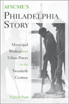
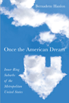

 |
AFSCME's Philadelphia Story
Municipal Workers and Urban Power in the Twentieth Century
Ryan, Francis
A history of the largest union in the AFL-CIO and its growth in a major American city
New in Paperback!
320 pp • 6x9 • Spring 2012
paper 978-1-4399-0279-0 |
|
A Midwestern Mosaic
Immigration and Political Socialization in Rural America
Lay, J. Celeste
How native-born rural adolescents adapt to new immigrants in their communities
238 pp • 6x9 • Spring 2012
paper 978-1-4399-0793-1
cloth 978-1-4399-0792-4 |
|
Blue Juice
Euthanasia in Veterinary Medicine
Morris, Patricia
How veterinarians and pet owners manage companion animal euthanasia
244 pp • 6x9 • Spring 2012
paper 978-1-4399-0706-1
cloth 978-1-4399-0705-4 |
|
Catheters, Slurs, and Pickup Lines
Professional Intimacy in Hospital Nursing
Ruchti, Lisa C.
A detailed ethnography exploring the professional skill of intimate care in nursing
226 pp • 6x9 • Spring 2012
paper 978-1-4399-0753-5
cloth 978-1-4399-0752-8 |
|
The Chinese Diaspora on American Screens
Race, Sex, and Cinema
Marchetti, Gina
A look at Chinese filmmaking in the post-1989 American diaspora
258 pp • 6x9 • Spring 2012
cloth 978-1-59213-518-9 |
|
Civic Talk
Peers, Politics, and the Future of Democracy
Klofstad, Casey A.
Exploring how the simple act of talking about politics and current events with friends, colleagues, and relatives causes us to become more civically active
New in Paperback!
200 pp • 6x9 • Spring 2012
paper 978-1-4399-0273-8 |

|
The Company We Keep
Occupational Community in the High-Tech Network Society
Marschall, Daniel
How computer technologists developed an occupational identity that persists in cyberspace long after the dot-com bubble has burst
204 pp • 6x9 • Spring 2012
cloth 978-1-4399-0755-9 |
|
Ecomusicology
Rock, Folk, and the Environment
Pedelty, Mark
How popular music reflects the contradictions and dreams of communities searching for more sustainable ways to live
242 pp • 6x9 • Spring 2012
paper 978-1-4399-0712-2
cloth 978-1-4399-0711-5 |
|
The Enigmatic Academy
Class, Bureaucracy, and Religion in American Education
Churchill, Christian J., and Gerald E. Levy
Challenging the common idea that education can save the individual and society from major problems of the modern world
234 pp • 6x9 • Spring 2012
paper 978-1-4399-0784-9
cloth 978-1-4399-0783-2 |
|
Espejos y ventanas (Mirrors and Windows)
historias orales de trabajadores agricolos y sus familias (Oral Histories of Mexican Farmworkers and the Families)
edited by Lyons, Mark, and August Tarrier
Oral histories of Mexican farmworkers in the Philadelphia region
318 pp • 6x9 • Spring 2012
paper 978-0-971-2996-6-5 |
|
The Forgotten Bottom Remembered
Stories from a Philadelphia Neighborhood
edited by Tarrier, August
Stories from an important, if little noticed, neighborhood of Philadelphia
202 pp • 6x9 • Spring 2012
paper 978-0-971-2996-4-1 |
|
Governing How We Care
Contesting Community and Defining Difference in U.S. Public Health Programs
Shaw, Susan J.
An analysis of local struggles over community health as a window into governance, citizenship, and identity formation
214 pp • 6x9 • Spring 2012
paper 978-1-4399-0683-5
cloth 978-1-4399-0682-8 |
|
Look, a White!
Philosophical Essays on Whiteness
Yancy, George
From a celebrated scholar on race, a book on ways of seeing, and seeing through, whiteness
224 pp • 6x9 • Spring 2012
paper 978-1-4399-0854-9
cloth 978-1-4399-0853-2 |

|
Men's College Athletics and the Politics of Racial Equality
Five Pioneer Stories of Black Manliness, White Citizenship, and American Democracy
Kaliss, Gregory J.
Profiles of college athletes and teams that challenged the color line in America
248 pp • 6x9 • Spring 2012
cloth 978-1-4399-0856-3 |
|
More Than a Game
Life Lessons from Philadelphia's Sports Community
Shorr-Parks, Eliot, and Steve Parks
Voices from Philadelphia's athletic community on what it's like being a Philadelphian and a fan, and on what makes a community work
266 pp • 6x9 • Spring 2012
paper 978-0-9840429-0-6 |
|
No Restraints
An Anthology of Disability Culture in Philadelphia
edited by Ott, Gil
A collection of personal stories about living with disability in Philadelphia
152 pp • 7x10.5 • Spring 2012
paper 978-0-971-2996-2-7 |
 |
Once the American Dream
Inner-Ring Suburbs of the Metropolitan United States
Hanlon, Bernadette
A comprehensive national study of inner-ring suburbs in the U.S.
New in Paperback!
224 pp • 6x9 • Spring 2012
paper 978-1-59213-937-8 |
|
Picturing Model Citizens
Civility in Asian American Visual Culture
Phu, Thy
How images portraying Asians as civil subjects contribute to debates on Asian American citizenship
218 pp • 6.125x9.25 • Spring 2012
paper 978-1-4399-0721-4
cloth 978-1-4399-0720-7 |

|
The Public and Its Possibilities
Triumphs and Tragedies in the American City
Fairfield, John D.
Throughout U.S. history, our unrealized civic aspirations provide the essential counterpoint to an excessive focus on private interests
New in Paperback!
368 pp • 6x9 • Spring 2012
paper 978-1-4399-0211-0 |
|
Pushing Back the Gates
Neighborhood Perspectives on University-Driven Revitalization in West Philadelphia
Etienne, Harley F.
A critical study of university-driven development from the neighborhood resident's perspective
192 pp • 5.5x8.25 • Spring 2012
cloth 978-1-4399-0068-0 |
|
Reframing Transracial Adoption
Korean Adoptees, White Parents and the Politics of Kinship
Brian, Kristi
A provocative critique of transnational, transracial adoption from a critical race and feminist perspective and a vision for reform
230 pp • 6x9 • Spring 2012
paper 978-1-4399-0184-7
cloth 978-1-4399-0183-0 |
|
Tiananmen Fictions Outside the Square
The Chinese Literary Diaspora and the Politics of Global Culture
Kong, Belinda
How the Tiananmen Square protest and massacre haunts the work of writers in the Chinese diaspora
292 pp • 6x9 • Spring 2012
paper 978-1-4399-0759-7
cloth 978-1-4399-0758-0 |
|
Toomey's Triumph
Inside a Key Senate Campaign
Gullan, Harold I.
A veteran political observer's take on the critical Pat Toomey-Joe Sestak Senate race of 2010
256 pp • 6x9 • Spring 2012
cloth 978-1-4399-0835-8 |
|
"To Serve a Larger Purpose"
Engagement for Democracy and the Transformation of Higher Education
edited by Saltmarsh, John, and Matthew Hartley
How to return democracy to the heart of a university's mission
New in Paperback!
326 pp • 6x9 • Spring 2012
paper 978-1-4399-0507-4 |
|
Transfeminist Perspectives in and beyond Transgender and Gender Studies
edited by Enke, Anne
An argument for bringing transgender studies into women's studies departments and an exploration of the impact of trans issues in various aspects of higher education
268 pp • 6x9 • Spring 2012
paper 978-1-4399-0747-4
cloth 978-1-4399-0746-7 |
|
Treacherous Subjects
Gender, Culture, and Trans-Vietnamese Feminism
Duong, Lan P.
How gender shapes cultural production in Viet Nam and its diaspora
264 pp • 6x9 • Spring 2012
paper 978-1-4399-0178-6
cloth 978-1-4399-0177-9 |
|
Whose National Music?
Identity, Mestizaje, and Migration in Ecuador
Wong, Ketty
How class divisions shape the definition of Ecuador's national music and identity
268 pp • 6x9 • Spring 2012
cloth 978-1-4399-0057-4 |
Click here to download the catalog (pdf). |